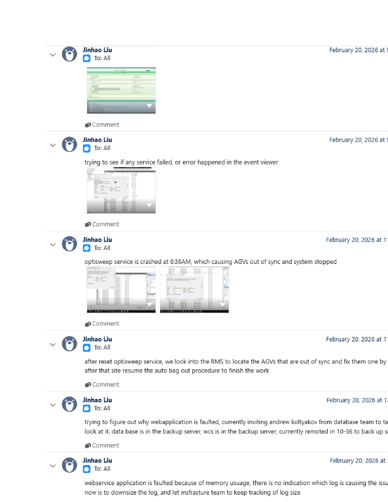

| Procedure ID | proc_optisweep_service_reset_and_api_check_v1 |
|---|---|
| Title | Check and reset the OptiSweep service in Windows Event Viewer / Services, then validate through Apidog / WCS API |
| Procedure Type | recovery |
| Primary Role | L2_support |
| Support Safe | Yes |
| Capability Tags | wcs_service_health, wcs_api_responsiveness |
| Access Surface | event_viewer, apidog, wcs_api |
| Audience Roles | L2_support, L3_support |
| Failure Pattern Tags | service_crash_or_restart, unplanned_restart, api_unresponsive |
| Validation Status | needs_sme_review |
| Merge Status | source_finalized |
Use Windows Event Viewer / services to identify an OptiSweep service termination, inspect the OptiSweep service state in Windows Services, use the visible Restart the service control when a reset is required, and validate recovery through Apidog / WCS API with GetAgvStatuses.
Use Windows Event Viewer / services and Apidog / WCS API when OptiSweep or the robotic system is not responding, the system has stopped, AGVs are out of sync, or a service termination is suspected. Confirm the service state and API response before treating the reset as successful.



Responsible role: L2_support
Instruction:
In Windows Event Viewer / services, inspect the System log for Service Control Manager Event 7031 for OptiSweep. Check that the event reports an unexpected termination and identifies the 60000-millisecond restart action.
Expected result:
The live Windows Event Viewer / services System log displays an OptiSweep Event 7031 at Error level with an unexpected-termination message and a configured restart action after 60000 milliseconds.
Stop or Escalate If:
Responsible role: L2_support
Instruction:
In Windows Event Viewer / services, open Windows Services, select the service named OptiSweep, and inspect its live Status, Startup Type, and available service controls.
Expected result:
Windows Services displays OptiSweep with an observable Status and Startup Type; the incident evidence showed Running, Automatic, and a visible Restart the service control.
Stop or Escalate If:
Responsible role: L2_support
Instruction:
In Windows Event Viewer / services, use the visible Restart the service control for OptiSweep when the service requires the documented reset. Do not make other service or configuration changes.
Expected result:
The Windows Services console completes the selected OptiSweep restart operation and displays the resulting service state for subsequent Apidog / WCS API validation.
Stop or Escalate If:
Responsible role: L2_support
Instruction:
In Apidog / WCS API, send the GetAgvStatuses request and inspect the live response status and returned AGV records.
Expected result:
Apidog / WCS API returns HTTP 200 for GetAgvStatuses and the response contains AGV records; visible records may include NORMAL status values.
Stop or Escalate If:
Responsible role: L2_support
Instruction:
If OptiSweep cannot be restarted in Windows Event Viewer / services or GetAgvStatuses does not return a response through Apidog / WCS API, stop this procedure and transfer ownership to L3_support. Do not attempt undocumented RMS state changes.
Expected result:
The unresolved service or API condition is assigned to L3_support with the observed Windows Services state, Event Viewer evidence, and Apidog / WCS API response condition available for review.
Stop or Escalate If: